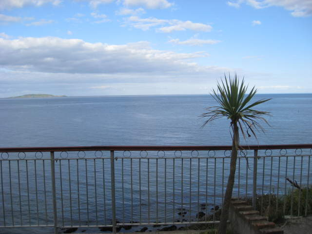
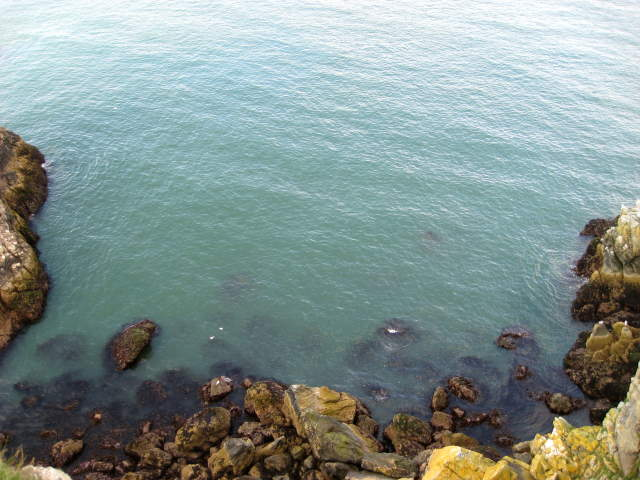
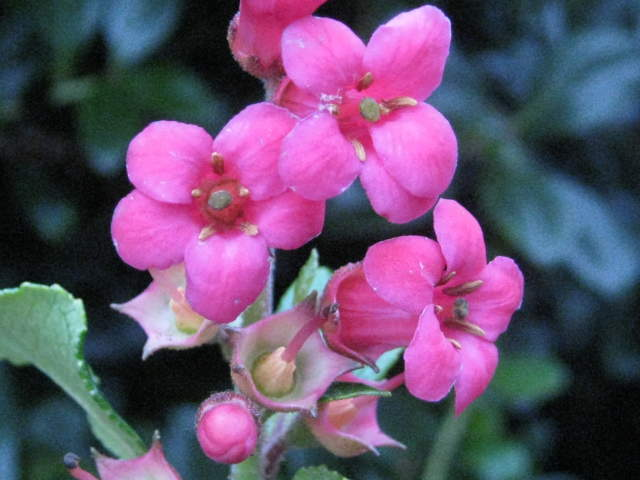

Andrea, Vanessa, Yoavick and I wanted to explore the Irish countryside. On someone's recommendation, we went to a town not too far away by train. Here they had fudge. If I saw the "You choose 4" advertisement in the camera, I may have bought some fudge.
Howth, right alongside the Irish sea, had a popular marina. I was just taking a picture of the bird though.
We think these were sea lions that swam up to see the tourist zoo. Apparently they wanted fudge bars, but we didn't buy any.
This sea lion was upset and went back home.
Are you sure you can't spare a fudge bar?
No fudge bar :(
Here's a lighthouse designed to make this picture more interesting.
I saw this plane fly overhead. After loading it up, I noticed the Aer Lingus clover on the tail. That's the main Irish airline.
A few motorboats sped around.
Daisies along the Irish sea.
I always try to get at least one shot with a sailboat with its sails both down. Most of them only used one sail or just turned on the motor. I assume that little tower lights up on top, because it's a pretty low height for an observation deck. Maybe they put it there to help people escape from bears.
Here's a wall with steps for people to sit on and stare at the pretty sailboat and silly observation deck.
Although we were not in France, I wanted a crepe and did not want to wait any longer. We found this emergency crepe-injection station.
In a real emergency, you could go with the heavy artillery. Not good for you though.
This isn't the best picture of me, but everyone else looked good so I took the bullet for them. I was happy with my crepe though, so who cares?
At this moment, I was saying I really wanted to hear some Irish music. This man eavesdropped and heard this, proceeding to take out his fiddle and get to work.
I saw this amazing-sounding Bailey's ice cream in an ice cream store we went to. All of us wanted the Bailey's ice cream, but it just looked so plain. I bought Pooh-bear ice cream instead. The others joked that I was eating poo :(
This looks nice, but it actually reminds me of Sandy Hook in New Jersey. Not really a gold standard.

Okay, a palm tree. I've seen some paintings that looked like this, so I was getting happier.
Hey, check out the house on the rolling green hill with the castle wall along the Irish sea! Now we're talking!
A small island floats by...
Here's a shot that gives much better coverage of this guy's property.
You can see the marina and the house.
Vanessa did not want to hike any further, so she convinced us she could have fun here.
We made it to the top of the hill we were climing up. Seeing water from higher up isn't very special, but the moss was cool This picture was from partway up, like the others so far..
This boat no doubt was trying to smuggle Guinness out of the country.

This sign, if you observe closely, warns you that you can fall off cliffs.
Finally we reached the top. I took a picture of where Vanessa was sitting. You can see someone dressed in black sitting on the edge there. That's her!
I decided to test out my camera's zoom on Vanessa, to prove to you it really might be her.
Falling would have been bad. Looked scarier in person, with hungry birds overhead.
This is the most expansive view you're going to get of Howth. It's better than that silly observation deck.
I took a picture of Andrea taking a picture. Andrea was also shy about having her picture taken. She focuses very intensely though, and called this a "sneaky" shot. I assure you, I did not use zoom for this picture. I just held the camera in front of her face and snapped a picture. A ninja I am not.
Here's Yoav reaching the top too.

We watched the water rhythmically wash over the rocks down below. Little seagulls sat in the water, enjoying the bumpy waves. The two white spots to the left are seagulls.
The way the sun hit the rocks was stunning in person. You have to see it in person. Or you can just look at this picture.
The rocks were decorated with yellow and green splotches.
Down this slope, the colors looked amazing.

Here's me using my digital macro zoom on little flowers again. My friends did not wait up for me as I tried to take this picture in a strong breeze.
You can see how the water stains the rocks with that yellow tinge.
I saw someone walking a West Highland White Terrier along the way. I grew up with one, so I took a picture. I quizzed the owner to see if she really owned the westie, or if the westie was kidnapped. I asked, "Does he or does he not sniff crotches?" She said he does, so I knew the westie was with her owner.
We saw this nice man, Martin, on the way. The ladies with me thought he looked too cute. I asked if he'd pose for a picture with them. It was a very happy day for him.
On the bus ride back to Dublin, I got Martin's address so I could send these pictures to him. I haven't yet, but I will. We had fun conversation. He was into numerology and all sorts of other interesting hobbies.
Back